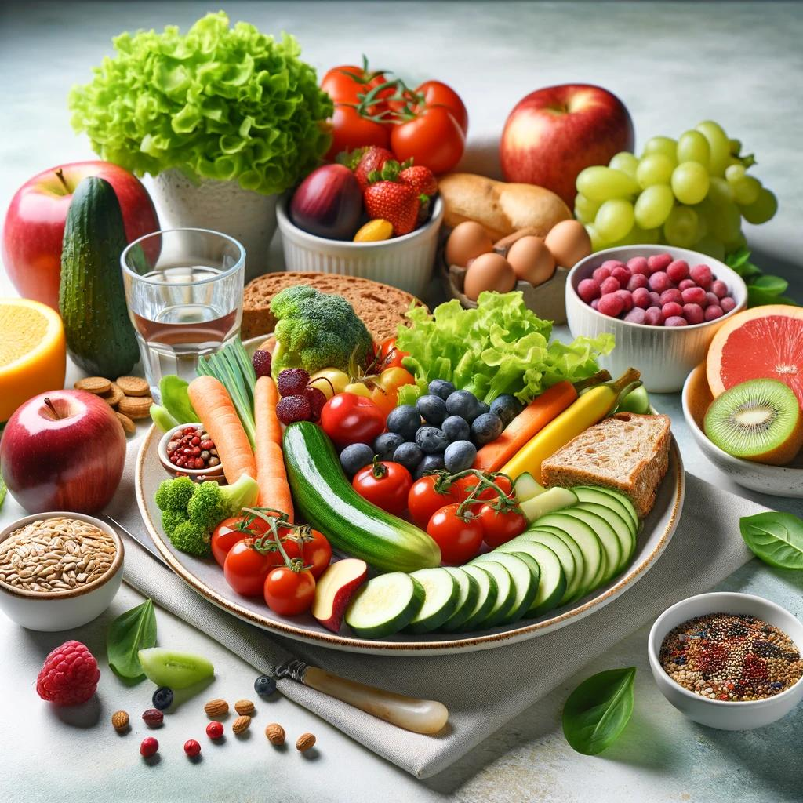

Understanding a Balanced Diet
A balanced diet is crucial for providing the body with the necessary nutrients it needs to function correctly. Not only does it contribute to overall health, but it also plays significant roles in disease prevention and maintaining optimal body weight.
Key Components of a Balanced Diet
A balanced diet includes a variety of food items from the following major food groups:
- Fruits: Aim for a variety of colors in your fruit choices as different colors typically signify different types of nutrients.
- Vegetables: Like fruits, variety is key. Include dark, leafy greens and bright-colored vegetables to cover a broad spectrum of nutrients.
- Whole Grains: Choose whole grains over refined grains, as they provide more fiber and nutrients. Examples include whole wheat, brown rice, and oats.
- Proteins: Focus on lean protein sources such as poultry, fish, beans, and legumes, and occasionally include red meat in moderate amounts.
- Dairy: Opt for low-fat or fat-free dairy options where possible to reduce calorie intake while maintaining nutrient levels.
- Fats: Healthy fats are essential for brain health and energy. Include sources of unsaturated fats like nuts, seeds, avocados, and olive oil.
Benefits of a Balanced Diet
Adhering to a balanced diet has numerous health benefits including:
- Improved heart health and reduced risk of heart disease
- Better blood sugar regulation, which can help prevent or manage diabetes
- Enhanced brain function and mental clarity
- Stronger bones and teeth
- Improved digestion and gut health
- Enhanced immune function
- Increased energy levels and better mood regulation
Tips for Maintaining a Balanced Diet
Implementing a balanced diet into your daily life can be straightforward with these practical tips:
- Plan your meals to include servings from each major food group.
- Incorporate a wide variety of foods to ensure a broader intake of nutrients.
- Prepare meals at home to control ingredients and portions.
- Stay hydrated by drinking plenty of water throughout the day.
- Limits sugars, salts, and saturated fats, but don't cut them out completely without consulting with a healthcare provider.
By understanding and implementing a balanced diet, you can significantly enhance your health and wellbeing, setting a foundation for a healthier lifestyle.